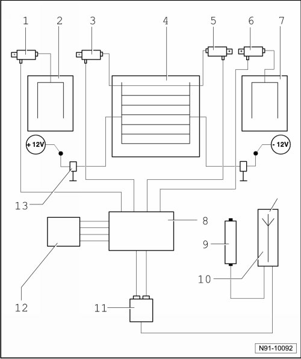

Antenna Overview
Antenna Overview
• Antennas are no longer installed in the rear window antenna from 11/06. That affects the following components: Antenna Amplifiers R111 and R112 and Rear Window Antennas R130 and R131.

1 - Antenna Amplifier (R24)
• for AM/FM and TV
• installed over left side window
• Removing and installing, refer to --> [ Antenna Amplifier Above Side Windows ] Antenna Amplifier Above Side Windows
2 - Antenna (R11)
• installed in left rear side window
3 - Antenna Amplifier (R111)
• for FM and TV
• installed in upper rear lid
• Removing and installing, refer to --> [ Antenna Amplifier in Rear Lid ] Antenna Amplifier in Rear Lid
4 - Rear Window Antenna 1 (R130) and (R131)
• installed in rear window
5 - Antenna Amplifier (R112)
• for FM and TV
• installed in upper rear lid
• Removing and installing, refer to --> [ Antenna Amplifier in Rear Lid ] Antenna Amplifier in Rear Lid
6 - Antenna Amplifier (R113)
• for FM and TV
• installed above right side window
• Removing and installing, refer to --> [ Antenna Amplifier Above Side Windows ] Antenna Amplifier Above Side Windows
7 - Radio Antenna 2 (R93)
• installed in right rear side window
8 - Antenna Selection Control Module (J515)
• installed under rear of headliner
• Removing and installing, refer to --> [ Antenna Selection Control Module ] Antenna Selection Control Module
9 - Telephone Operating Electronics and Telephone Control Module (J412)
10 - Navigation System Antenna (R50) and Radio/Telephone Antenna (R51)
• installed under right front fender
• Removing and installing --> [ Navigation and Telephone Antenna ] Navigation and Telephone Antenna
11 - Radio (R) or Radio/Navigation Display Control Module (J503) (radio navigation system)
12 - TV Tuner (J415)
• as special equipment and only in conjunction with the radio navigation system
13 - Low pass filter
• prevents reception interference when rear window defroster is activated
• installed in wiring harness